| 10月5日出发，不早不晚刚刚好 | ||||||||||||||||||||
| Thu | Fri | Sat | Sun | Mon | Tue | Wed | Thu | Fri | Sat | Sun | ||||||||||
| 休1 | 休2 | 休3 | 休4 | 休5 | 休6 | 休7 | 请8 | 请9 | 班10 | 休11 | ||||||||||
| 前四天可以值班或探亲访友 | 全家一起度过难忘的三峡之旅 | |||||||||||||||||||
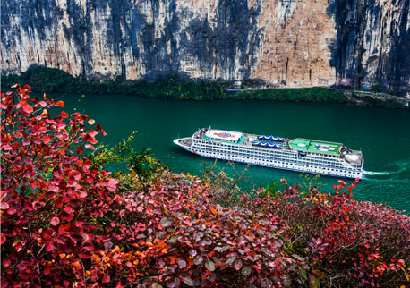
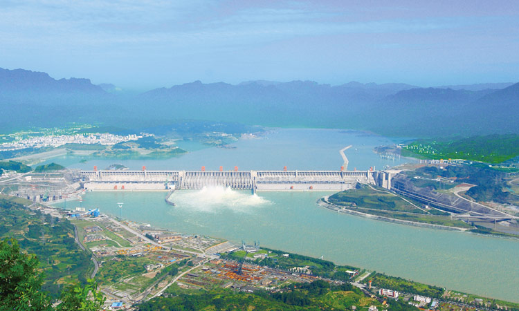
三峡水电站是世界上规模最大的水电站，也是中国有史以来建设最大型的工程项目。而由它所引发的移民搬迁、环境等诸多问题，使它从开始筹建的那一刻起，便始终与巨大的争议相伴。三峡水电站的功能有十多种，航运、发电、种植等等。
三峡浩大的移民工程，世界水利史上亘古未有。根据规划，三峡蓄水至175米水位时，最终移民将达１２０万人。这相当于一个欧洲中等国家的人口，是此前世界最大的水利工程伊泰普电站移民的28倍！
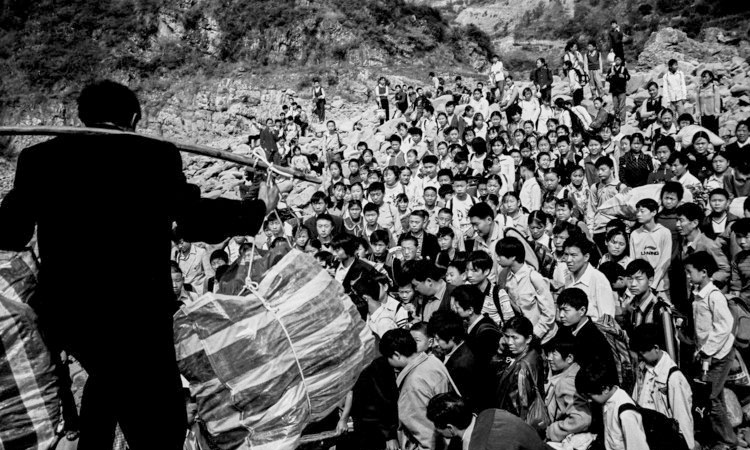
为了建设三峡工程，110多万移民告别故土。挥一挥手，作别故园的千重稻菽；鞠一鞠躬，叩别黄土下的祖辈魂灵。百万移民开始了从1993年到2005年的大转移。涉及面之广，动迁规模之大，创举之多，中外史上前所未有。
三峡大移民，决不是百万人口的简单重组。它所引发的巨大社会变迁，绝不亚于三峡自然景观的沧海桑田变化。
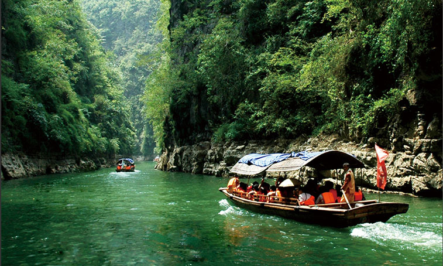
此次三峡之旅的途中，同船的很多游客都是全家出游，很多人带着父母，抱着孩子游览长江三峡。
从“高峡出平湖”的风光美景，“刘备白帝托孤”的历史典故，到大规模的库区移民工程（据说也有相当一部分库区移民迁到了我们江苏地区哦），再到“当今世界殊”的三峡大坝，在一路游览中，家人之间的感情更加融洽，民族自豪感也油然而生。
站在雄伟的三峡大坝面前，让人不得不感到自己渺小，同时也由衷地感叹国人修建如此宏伟建筑的魄力和坚持~
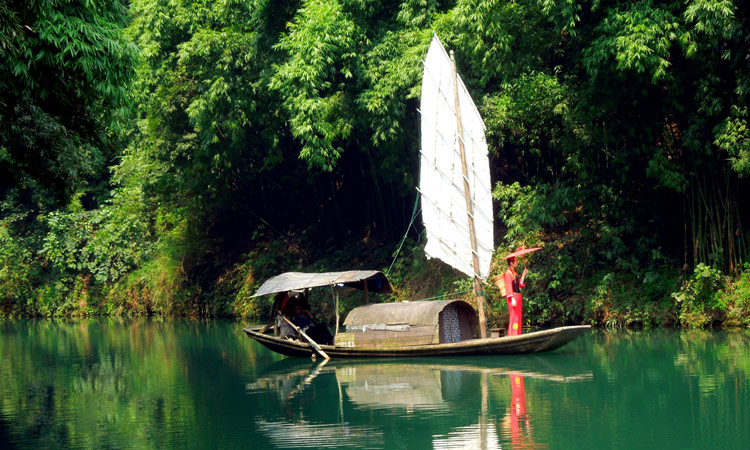
三峡人家，位于长江三峡中最为奇幻壮丽的西陵峡境内，三峡大坝和葛洲坝之间，跨越秀丽的灯影峡两岸，依山傍水，风情如画：传统的三峡吊脚楼点缀于山水之间，久违的古帆船、乌篷船安静地泊在三峡人家门前，溪边少女挥着棒槌在清洗衣服，江面上悠然的渔家在撒网打鱼……千百年来流传不衰的各种习俗风情体现着峡江人民的质朴好客。走进峡江吊脚楼，峡江妹子载歌载舞，手中的红绣球飘飘欲落...
龙门巴雾连滴翠，奇山秀水胜三峡。长江小三峡以其美丽的景色吸引着众多游人的目光；南起巫山县，北至大昌古城，小三峡由龙门峡、巴雾峡和滴翠峡组成。与长江三峡的宏伟壮观、雄奇险峻相比，小三峡则显得秀丽别致，精巧典雅，故人们赞誉小三峡可谓“不是三峡，胜似三峡”。 沿途可欣赏到保存完好的古栈道，更是有悬挂在山崖上的悬棺，让人叹为观止。
白帝城位于重庆奉节县瞿塘峡口的长江北岸，奉节东白帝山上，三峡的著名游览胜地。白帝城是观“夔门天下雄”的最佳地点。历代著名诗人李白、杜甫、白居易、刘禹锡、苏轼、黄庭坚、范成大、陆游等都曾登白帝，游夔门，留下大量诗篇，因此白帝城又有“诗城”之美誉。
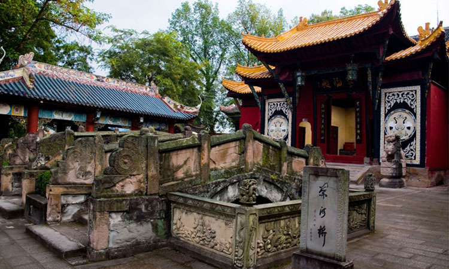
丰都鬼城，是一座起源于汉代的历史文化名城，被人们传为“鬼国京都”、“阴曹地府”，成为人类亡灵的归宿之地。它不仅是传说中的鬼城，还是集儒、道、佛为一体的民俗文化艺术宝库，是长江黄金旅游线上最著名的人文景观之一。
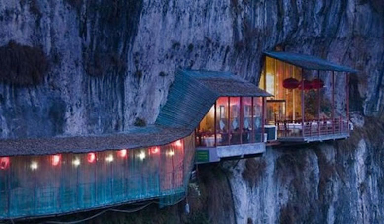
放翁餐厅是一座洞穴餐厅，游客既能享受到最好味的三峡美食，同时也能一览三峡最壮丽的风景。其实，餐厅门口的迷惑性还是挺强的，初看上去和普通餐厅也没什么太大差别，但是在进入餐馆正门之后，你才能真正感受到中国传统美食和西陵峡景色结合的绝美之感。如果你恐高，那么30米长的狭窄过道、在窗边欣赏屋檐下长江风景绝对会是你用暴露疗法治疗恐高的最佳选择。幸好，过道旁边还有铁栏杆，如果你害怕的话可以扶着栏杆走到餐厅去...
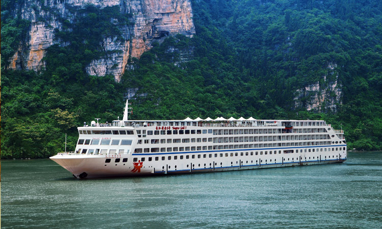
长江最好的邮轮，奔跑吧兄弟”拍摄船，2012年下水，1.7万吨涉外邮轮，风平浪静不晕船。
邮轮船长149.95米，宽24米，高6层，总面积超过1.8万平方米，客房总数216套，设有豪华标准房、行政标准房、行政大床房、行政套房、总统套房等房型，最大载客可达570人，1.7万吨级，设计航速26km/h，总投资1.8亿元，是长江上真正的第五代万吨级豪华邮轮。
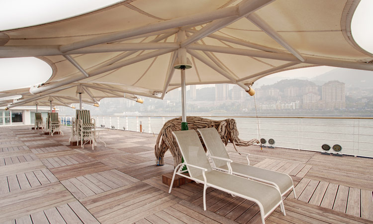
4晚五星邮轮，轻松自由，含4早8正餐，船上自助，全程无购物。
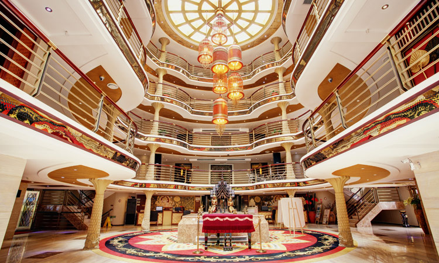
长江黄金5号邮轮采用的是东南亚酒店装饰风格，邮轮内部以宗教色彩中浓郁的深色系为主，沉稳大气。装饰上将佛教思想、自然主义、本土文化等因素柔和到一起，让游客在旅途中融入自然、享受自然，处处感受到一派浓郁的东南亚风情，在长江的所有邮轮中独树一帜。
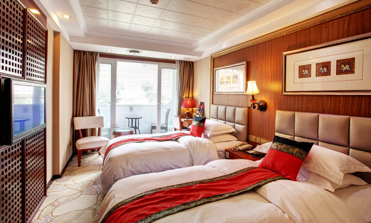
豪华标准房24㎡，床尺寸1.1米×2米，每间配2张单人床
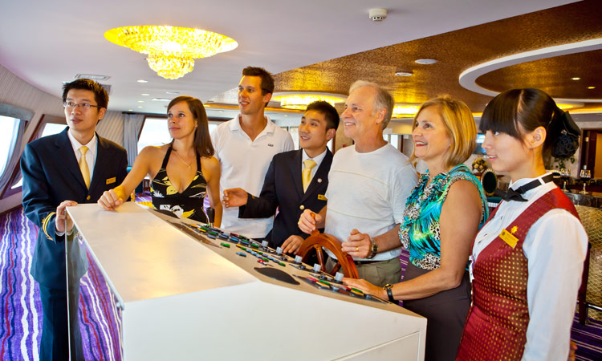
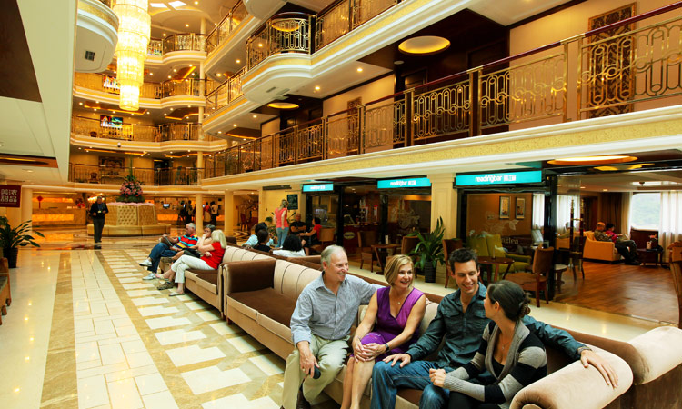
邮轮大厅一条800多平方米的泰式风情商业街，成为突破传统长江游轮船体结构的颠覆性设计。礼品商店、特产超市、甜品屋、咖啡吧等应有尽有，走在这里就如同行走在东南亚最繁华的商业街道。
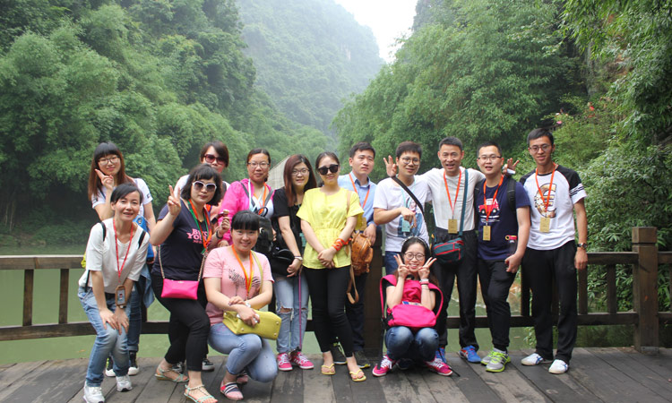
2015年6月1日，三三旅游总经理室三位总经理携门店店长、业务骨干考察长江三峡黄金5号邮轮。在考察中，我们对整条路线进行了深度的挖掘，从各方面对线路优化和丰富。
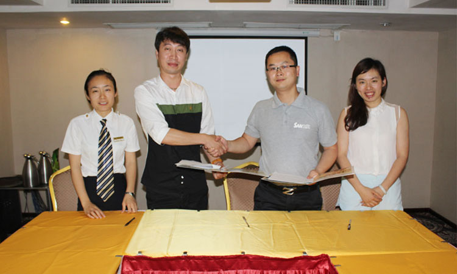
2015年6月，在长江黄金5号船上会议厅，三三旅游与长江邮轮公司签订包船协议。
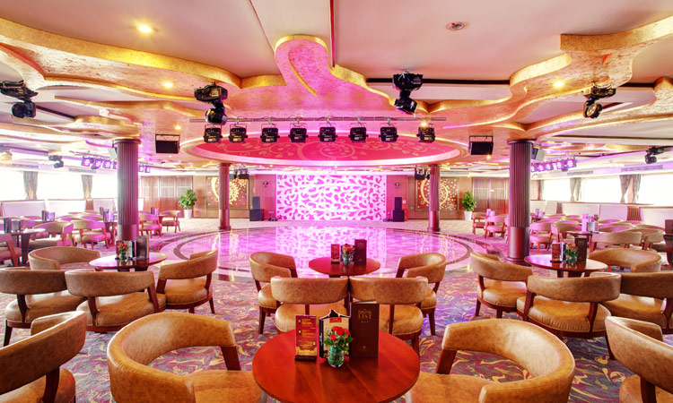
为了丰富邮轮上的旅途，我们为您精心准备了三三专场晚会， 将由三三旅游工作人员与游客一起完成。这是一个自我展示的绝佳机会，我们也为晚会节目表演参与者准备了丰富的奖品，让您与您的朋友、家人共同度过难忘的邮轮之旅。
活动期间，至三三旅游门店报名黄金5号邮轮重庆三峡产品（A线、B线、C线），刷光大银行信用卡支付旅游费用，立减300元！（优惠仅限持卡人本人报名、参团，共50个名额，先到先得，额满即止）
自组团
三三设计、三三收客、三三导游上门接送
往返机场上门接送直营门店
直营门店值得信赖方便快捷
门店遍布苏州县市维护权益
关注客户心声